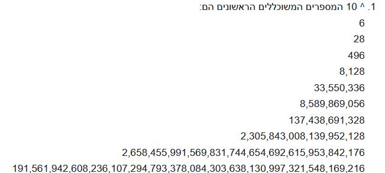

האם למרות ה"גנרטור" הגיוני שלוקח לפונקציה מלא זמן להחזיר את המספר החמישי?
המספרים שיצאו לי עד עכשיו הם:
6, 28, 496, 8128 אבל המספר החמישי לוקח לו יותר מידי זמן לצאת.
לייק 1
בהינתן המספר הבא אני אניח שזה הגיוני לגמרי 

מרגיש לי שאני עושה פה משהו עובד אבל לא הכי יעיל.
קודם כל איך אפשר להניח שכל המספרים שיצאו הם זוגיים?
גם למחשב שלי לוקח מלא זמן למספר החמישי… טוב תסתכל מה ההפרש בין המספר הרביעי לחמישי…
כמה זמן לקח לזה לרוץ?
{kind=link}
לא בדקתי על החמישי, אני צריכה את המחשב שלי שמיש לעוד דברים. ראיתי שלוקח לזה שניות ארוכות לבדוק את 30,000 המספרים הראשונים והבנתי את הרמז
2 לייקים
תחשוב איזה באסה זה היה לו לא היה לך גנרטורים 
2 לייקים
עוד שאלה לא קשורה בנוגע לפתיחת קובץ במקטעים:
במקרה של התרגיל האחרון לחששנית לא היה צריך לפתוח אותו במקטעים, אבל אם פותחים במקטעים - איך אני יודע שהחלוקה שאני מחלק למקטעים לא פוגעת גם במסרים נגיד? שהחלוקה לא “נופלת” בידיוק על המסר?
יש פתרון נסה לחשוב על זה
דמיין איזה בעסה אם לא היה מחשב…
3 לייקים
מה נחשב “מקטע קטן”?
עליתי על הרעיון, עכשיו לידע כללי, איך מקובל לחלק את הקריאה למנות?
כל מנה תהיה שווה לכמה? 1024 ביטים/תווים? 8192?
עד איזה מספר צריך לבדוק ולהדפיס?
עד אינסוף
שזה פחות או יותר שקול לתבקש להדפיס את 5 המספרים הראשונים
השאלה היא האם לחסום את זה בfor על כמות הרצות מסויימות כמו שהראו בדוגמאות ? או פשוט להריץ את הגנרטור על לולאה נגיד אינסופית (אני מדבר על מחוץ לגנרייטור עצמו)
אני לא חושבת שזה משנה יותר מדי, אפשר גם רק על 10 המספרים הראשונים - זה די אותו דבר 
אני גם חושב כך
באותו נושא, התכנית שלי רצה מספר דקות ולא מוציאה כלום.
מהתגובות למעלה הבנתי שזה הגיוני שהריצה איטית, אבל כרגע אני לא יכול לבדוק אם הקוד שלי בכלל עובד.
התחלתי את הבדיקה החל מ-2, והשתמשתי ברשימה כדי לשמור את המחלקים של המספר הנבדק. ייתכן שזה קשור לזמן הריצה של הקוד שלי?
תבדוק עבור 4 המספרים הראשונים - המחשב יכול להריץ אותם יחסית מהר, אם הם יוצאים לך כנראה שכם האחרים.
אם המחשב מוציא לך אותם בפחות משניה אז יכול להיות שיש מקום לייעל את הקוד.
כמו כן תראה שאתה אכן משתמש בגנרייטור - בצורה כזו הוא יכול כבר במהלך הריצה להציג לך כל תוצאה שהוא מגיע אליה.
כך שאת הראשון שני שלישי אתה חייב לראות ממש על ההתחלה
אז ממה שאני מבינה ממכם אפשר באמת להפעיל את התוכנה רק ל4 מספרים נגיד? כמו מה שהיה בדוגמאות ופשוט לתת רק 4 נגיד? כדי שלא יתקע למתרגלים את המחשב? אם אני נותנת יותר מ4 הוא פשוט עובד מלא…